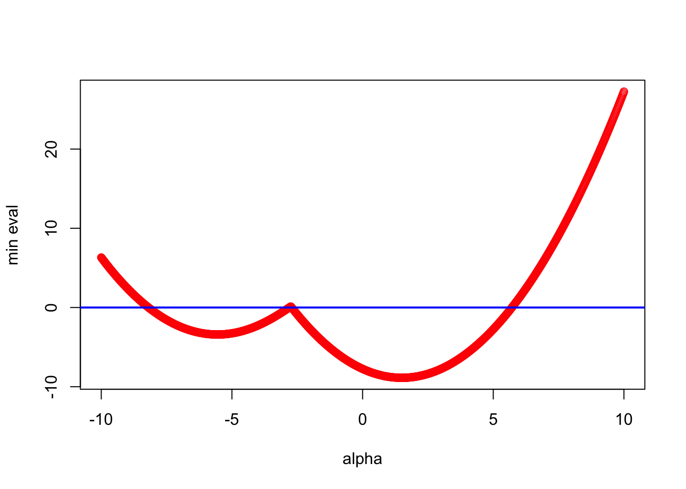
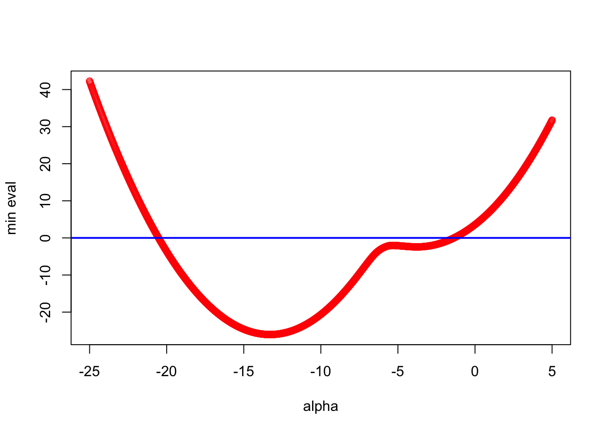
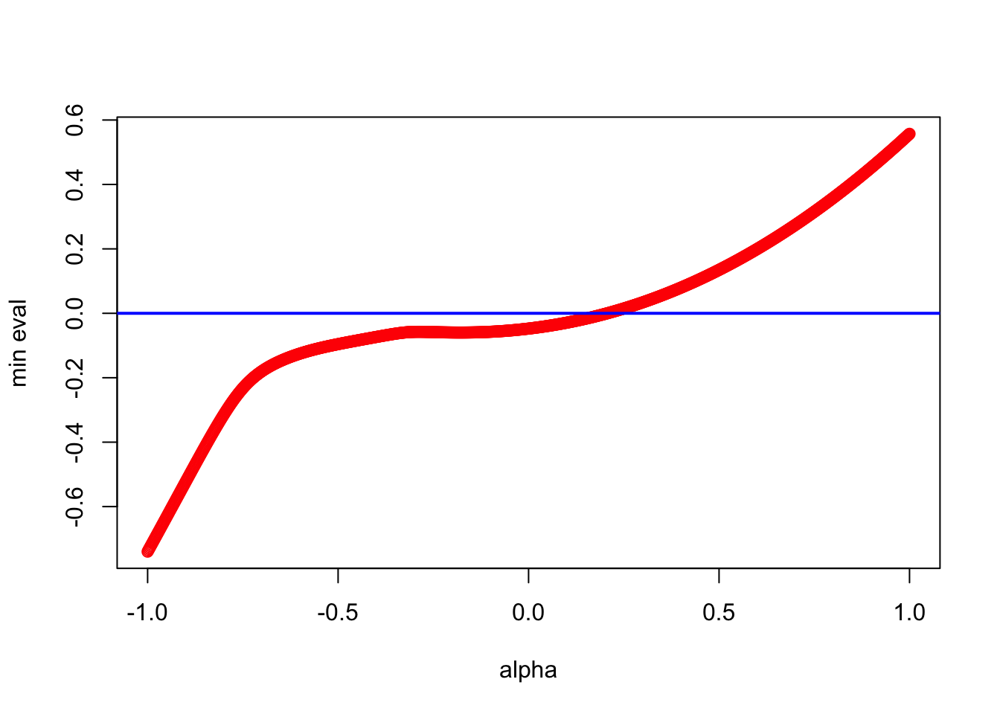
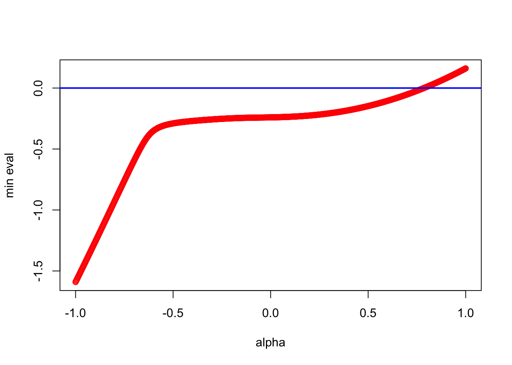
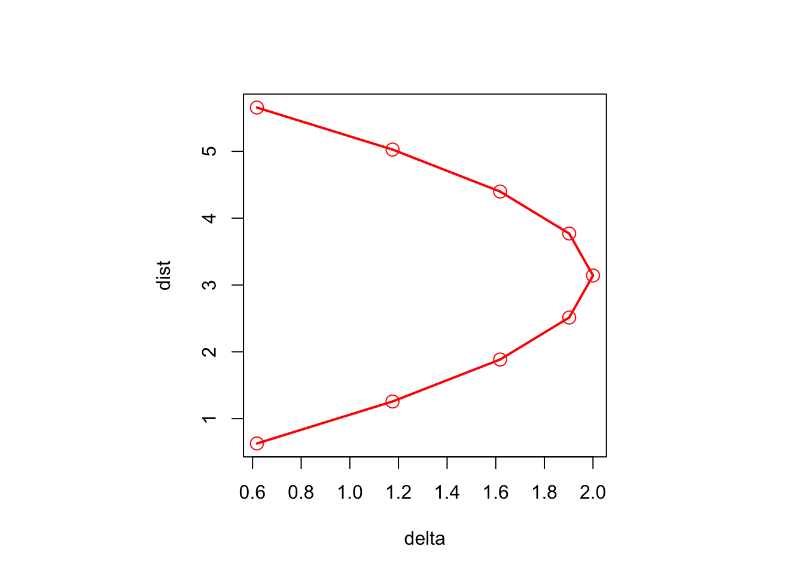
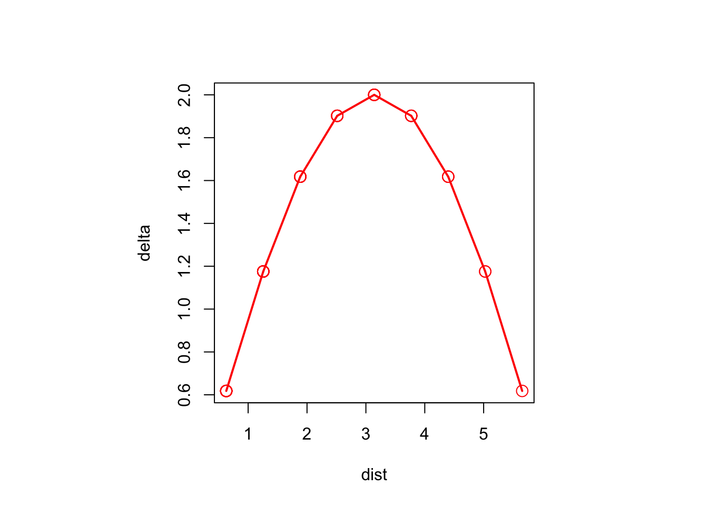

9 Interval MDS
intro: additive vs interval basic vs ratio
9.1 The Additive Constant
In the early history of MDS dissimilarities were computed from comparative judgments in the Thurstonian tradition.
triads paired comparisons etc positive orthant
These early techniques only gave numbers on an interval scale, i.e. dissimilarities known only up to a linear transformation. In order to get positive dissimilarities a rational origin needed to be found in some way. This is the additive constant problem. It can be seen as the first example of nonmetric MDS, in which we have only partially known dissimilarities.
\[\begin{align} \begin{split} (\delta_{ij}+\alpha)&\approx d_{ij}(X),\\ \delta_{ij}&\approx d_{ij}(X)+\alpha. \end{split} \tag{9.1} \end{align}\]
The additive constant techniques were more important in the fifties and sixties than they are these days, because they have largely been replaced by iterative nonmetric MDS techniques.
An early algorithm to fit the additive constant based on Schoenberg’s theorem was given by Messick and Abelson (1956). Torgerson based, i.e. the eigenvalues of \(\tau(\Delta^{(2)})\). It was a somewhat hopeful iterative technique, without a convergence proof, designed to make the sum of the \(n-p\) smallest eigenvalues equal to zero. This is of course only a necessary condition for best approximation, not a sufficient one.
In addition, the Messick-Abelson algorithm sometimes yielded solutions in which the Torgerson transform of the squared dissimilarities had negative eigenvalues, which could even be quite large. That is also somewhat of a problem. Consequently Cooper (1972) proposed an alternative additive constant algorithm, taking his clue from the work of Kruskal.
The solution was to redefine stress as a function of both the configuration and the additive constant. Thus
\[\begin{equation} \sigma(X,\alpha):=\mathop{\sum\sum}_{1\leq j<i\leq n}w_{ij}(\delta_{ij}+\alpha-d_{ij}(X))^2, \tag{9.2} \end{equation}\]
and we minimize this stress over both \(X\) and \(\alpha\).
Double phase (ALS)
\(\delta_{ij}+\alpha\geq 0\)
Single Phase
\[\begin{equation} \sigma(X):=\min_\alpha\mathop{\sum\sum}_{1\leq j<i\leq n}w_{ij}(\delta_{ij}+\alpha-d_{ij}(X))^2, \tag{9.3} \end{equation}\]
9.1.1 Algebra
The additive constant problem is to find \(X\in\mathbb{R}^{n\times p}\) and \(\alpha\) such that \(\Delta+\alpha(E-I)\approx D(X)\). In this section we look for all \(\alpha\) such that \(\Delta+\alpha(E-I)\) is Euclidean, i.e. such that there is a configuration \(X\) with \(\Delta+\alpha(E-I)=D(X)\). This is a one-parameter generalization of Schoenberg’s theorem.
It makes sense to require \(\alpha\geq 0\), because a negative \(\alpha\) would more appropriately be called a subtractive constant. Also, we may want to make sure that the off-diagonal elements of \(\Delta+\alpha(E-I)\) are non-negative, i.e. that \(\alpha\geq-\delta_{ij}\) for all \(i>j\). Note that if we allow a negative \(\alpha\) then if all off-diagonal \(\delta_{ij}\) are equal, say to \(\delta>0\), we have the trivial solution \(\alpha=-\delta\) and \(X=0\).
We start with a simple construction.
\iffalse{} Proof. We have, using \(\Delta\times(E-I)=\Delta\) and \((E-I)\times(E-I)=E-I\),
\[\begin{equation} \tau((\Delta+\alpha(E-I))\times(\Delta+\alpha(E-I)))= \tau(\Delta\times\Delta)+2\alpha\tau(\Delta)+\frac12\alpha^2J. \tag{9.4} \end{equation}\]
Thus each off-diagonal element is a concave quadratic in \(\alpha\), which is negative for \(\alpha\) big enough. Choose \(\alpha_0\geq 0\) to make all off-diagonal elements negative (and all dissimilarities non-negative). A doubly-centered matrix with all off-diagonal elements negative is positive semi-definite of rank \(n-1\) (Taussky (1949)).Note that by the same argument we can also find a negative \(\alpha_0\) that makes all off-diagonal elements negative and thus \(\Delta+\alpha(E-I))\) is again Euclidean of dimension \(r\leq n-1\). But this \(\alpha_0\) will usually result in negative dissimilarities.
Theorem 9.1 can be sharpened for non-Euclidean \(\Delta\). Define the following function of \(\alpha\):
\[\begin{equation} \lambda_\star(\alpha):=\min_{x'x=1, x'e=0}x'\{\tau(\Delta\times\Delta)+2\alpha\tau(\Delta)+\frac12\alpha^2J\}x. \tag{9.5} \end{equation}\]
This is the smallest non-trivial eigenvalue of the Torgerson transform in (9.4). The matrix \(\Delta+\alpha(E-I)\) is Euclidean if and only if \(\lambda_\star(\alpha)\geq 0\). Note that \(\lambda_\star\) is continuous, by a simple special case of the Maximum Theorem (Berge (1963), Chapter VI, section 3), and coercive, i.e. \(\lambda_\star(\alpha)\rightarrow +\infty\) if \(|\alpha|\rightarrow +\infty\).
The problem with extending theorem 9.2 to Euclidean \(\Delta\) is that the equation \(\lambda_\star(\alpha)=0\) may have only negative roots, or, even more seriously, no roots at all. This may not be too important from the practical point of view, because observed dissimilarities will usually not be exactly Euclidean. Nevertheless I feel compelled to address it.
Of course \(\lambda_\star(\alpha)=0\) can still have negative solutions, and in particular it will have at least one negative solution if \(\lambda_\star(\alpha)\leq 0\) for any \(\alpha\). There can even be negative solutions with \(\Delta+\alpha(E-I)\) non-negative.
The solutions of \(\lambda_\star(\alpha)=0\) can be computed and studied in more detail, using results first presented in the psychometric literature by Cailliez (1983). We reproduce his analysis here, with a somewhat different discussion that relies more on existing mathematical results.
In order to find the smallest \(\alpha\) we solve the quadratic eigenvalue problem (Tisseur and Meerbergen (2001))
\[\begin{equation} \{\tau(\Delta\times\Delta)+2\alpha\tau(\Delta)+\frac12\alpha^2J\}y=0. \tag{9.6} \end{equation}\]
A solution \((y,\alpha)\) of #ref(eq:qep1) is an eigen pair, in which \(y\) is an eigenvector, and \(\alpha\) the corresponding eigenvalue. The trivial solution \(y=e\) satisfies #ref(eq:qep1) for any \(\alpha\). We are not really interested in the non-trivial eigenvectors here, but we will look at the relationship between the eigenvalues and the solutions of \(\lambda_\star(\alpha)=0\).
The eigenvalues can be complex, in which case they do not interest us. If \(\alpha\) is a non-trivial real eigenvalue, then the rank of the Torgerson transform of the matrix in #ref(eq:qep1) is \(n-2\), but
To get rid of the annoying trivial solution \(y=e\) we use a square orthonormal matrix whose first column is proportional to \(e\). Suppose \(L\) contains the remaining \(n-1\) columns. Now solve
\[\begin{equation} \{L'\tau(\Delta\times\Delta)L+2\alpha L'\tau(\Delta)L+\frac12\alpha^2I\}y=0. \tag{9.7} \end{equation}\]
Note that the determinant of the polynomial matrix in (9.7) is a polynomial of degree \(2(n-1)\) in \(\alpha\), which has \(2(n-1)\) real or complex roots.
The next step is linearization (Gohberg, Lancaster, and Rodman (2009), chapter 1), which means finding a linear or generalized linear eigen problem with the same roots as (9.7). In our case this is the eigenvalue problem for the matrix
\[\begin{equation} \begin{bmatrix} \hfill 0&\hfill I\\ -2L'\tau(\Delta\times\Delta)L&-4L'\tau(\Delta)L \end{bmatrix} \tag{9.8} \end{equation}\]
9.1.2 Examples
9.1.2.1 Small Example
Here is a small artificial dissimilarity matrix.
## 1 2 3 4
## 1 +0 +1 +2 +5
## 2 +1 +0 +4 +2
## 3 +2 +4 +0 +1
## 4 +5 +2 +1 +0It is constructed such that \(\delta_{14}>\delta_{12}+\delta_{24}\) and that \(\delta_{23}>\delta_{21}+\delta_{13}\). Because the triangle inequality is violated the dissimilarities are not distances in any metric space, and certainly not in a Euclidean one. Because the minimum dissimilarity is \(+1\), we require that the additive constant \(\alpha\) is at least \(-1\).
The R function treq() in appendix A.1.9 finds the smallest additive constant such that all triangle inequalities are satisfied. For this example it is \(\alpha=2\).
The Torgerson transform of \(\Delta\times\Delta\) is
## 1 2 3 4
## 1 +4.312 +2.688 +1.188 -8.188
## 2 +2.688 +2.062 -5.938 +1.188
## 3 +1.188 -5.938 +2.062 +2.688
## 4 -8.188 +1.188 +2.688 +4.312with eigenvalues
## [1] +12.954 +7.546 +0.000 -7.750The smallest eigenvalue -7.75 is appropriately negative, and theorem 9.2 shows that \(\Delta\times\Delta+7.75(E-I)\) are squared distances between four points in the plane.
The upper bound for the smallest \(\alpha\) from theorem 9.1, computed by the R function acbound(), is 9.309475.
It is useful to look at a graphical representation of the minimum non-trivial eigenvalue of \(\tau((\Delta+\alpha(E-I))\times(\Delta+\alpha(E-I)))\) as a function of \(\alpha\). The R function aceval() generates the data for the plot.

We see that the minimum non-trivial eigenvalue is a continuous function of \(\alpha\),but one which certainly is not convex or concave or differentiable. The graph crosses the horizontal axes near -8, -3, and +6.
To make this precise we apply the theory of section xxx. The R function acqep() finds the six non-trivial eigenvalues
## [1] -8.192582+0.000000i 5.713075+0.000000i -3.500000+2.179449i
## [4] -3.500000-2.179449i -2.807418+0.000000i -2.713075+0.000000iTwo of the eigenvalues are complex conjugates, four are real. Of the real eigenvalues three are negative, and only one is positive, equal to +5.713. The table above gives the eigenvalues of the Torgerson transform, using all four real eigenvalues for \(\alpha\). The three negative ones do result in a positive semi-definite matrix with rank equal to \(n-2\), but they also create negative dissimilarities.
## -8.193 ****** +38.098 +13.885 +0.000 -0.000
## +5.713 ****** +61.116 +43.441 +0.000 -0.000
## -2.807 ****** +3.115 +0.402 -0.000 -0.000
## -2.713 ****** +3.228 +0.215 +0.000 +0.0009.1.2.2 De Gruijter Example

## [1] -20.527411+0.000000i -10.174103+0.000000i -9.472504+0.000000i
## [4] -6.622263+0.352619i -6.622263-0.352619i -5.885691+0.287544i
## [7] -5.885691-0.287544i -5.640580+0.366889i -5.640580-0.366889i
## [10] -4.391289+0.253248i -4.391289-0.253248i -3.708911+0.386844i
## [13] -3.708911-0.386844i -3.238930+0.000000i -2.311379+0.000000i
## [16] -1.369315+0.000000i9.1.2.3 Ekman Example

## [1] -5.713009655+0.0000000i -3.782729083+0.0000000i -1.791313475+0.0000000i
## [4] -1.628964140+0.0000000i -0.976213035+0.0000000i -0.744289350+0.0495939i
## [7] -0.744289350-0.0495939i -0.682321433+0.0000000i -0.534849034+0.0000000i
## [10] -0.513033529+0.0000000i -0.497908376+0.0248145i -0.497908376-0.0248145i
## [13] -0.372321687+0.1313892i -0.372321687-0.1313892i -0.388308013+0.0000000i
## [16] -0.229813135+0.1825985i -0.229813135-0.1825985i -0.286712033+0.0000000i
## [19] -0.212601059+0.1185199i -0.212601059-0.1185199i 0.206312577+0.0000000i
## [22] -0.194299448+0.0000000i 0.132767430+0.0000000i -0.079646956+0.0000000i
## [25] -0.024193535+0.0000000i -0.006762279+0.0000000i
## [1] -7.9740652+0.0000000i -4.8679294+0.0000000i -1.2242342+0.0000000i
## [4] -0.9822376+0.0000000i 0.7856448+0.0000000i 0.6486775+0.0000000i
## [7] -0.5540332+0.0000000i -0.5426006+0.0129703i -0.5426006-0.0129703i
## [10] 0.4864182+0.0000000i -0.1118921+0.3923586i -0.1118921-0.3923586i
## [13] 0.3829746+0.0000000i 0.3530897+0.0000000i -0.3516103+0.0000000i
## [16] -0.3073607+0.0000000i -0.1265941+0.2630789i -0.1265941-0.2630789i
## [19] -0.0735448+0.2698631i -0.0735448-0.2698631i -0.2333027+0.0000000i
## [22] -0.0081376+0.1948006i -0.0081376-0.1948006i -0.1380254+0.1175071i
## [25] -0.1380254-0.1175071i 0.1205026+0.0000000i9.1.3 A Variation
Alternatively, we could define our approximation problem as finding \(X\in\mathbb{R}^{n\times p}\) and \(\alpha\) such that \(\sqrt{\delta_{ij}^2+\alpha}\approx d_{ij}(X)\), or, equivalently, \(\Delta\times\Delta+\alpha(E-I)\approx D(X)\times D(X)\).
\iffalse{} Proof. Now we have
\[\begin{equation} \tau(\Delta\times\Delta+\alpha(E-I)))= \tau(\Delta\times\Delta)+\frac12\alpha J. \tag{9.9} \end{equation}\]
The eigenvalues of \(\tau(\Delta\times\Delta)+\frac12\alpha J\) are zero and \(\lambda_s+\frac12\alpha\), where the \(\lambda_s\) are the \(n-1\) non-trivial eigenvalues of \(\tau(\Delta\times\Delta)\). If \(\underline{\lambda}\) is smallest eigenvalue we choose \(\alpha=-2\underline{\lambda}\), and \(\tau(\Delta\times\Delta)+\frac12\alpha J\) is positive semi-definite of rank \(r\leq n-2\).Note that theorem 9.2 implies that for any \(\Delta\) there is a strictly increasing differentiable transformation to the space of Euclidean distance matrices in \(n-2\) dimensions. This is a version of what is sometimes described as Guttman’s n-2 theorem (Lingoes (1971)). The proof we have given is that from De Leeuw (1970), Appendix B.
ALS Negative delta
Euclidean \[ \sqrt{2-2\ \cos |i-j|\theta} \] Circular \[ |i-j|\frac{2\pi}{n} \] Linear \[ |i-j| \]

